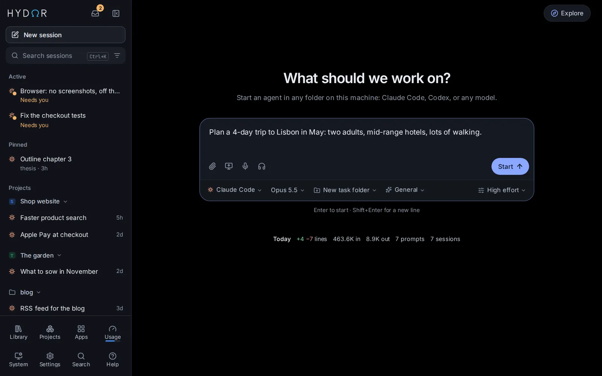
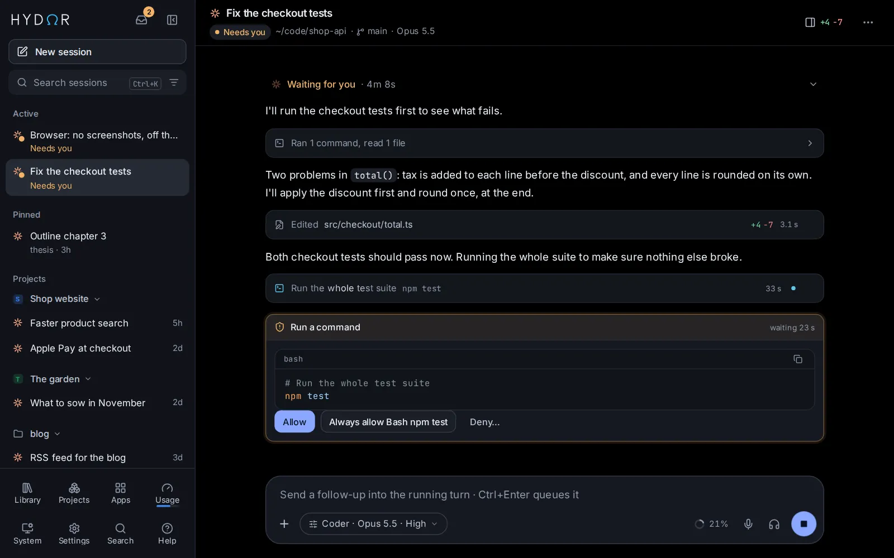
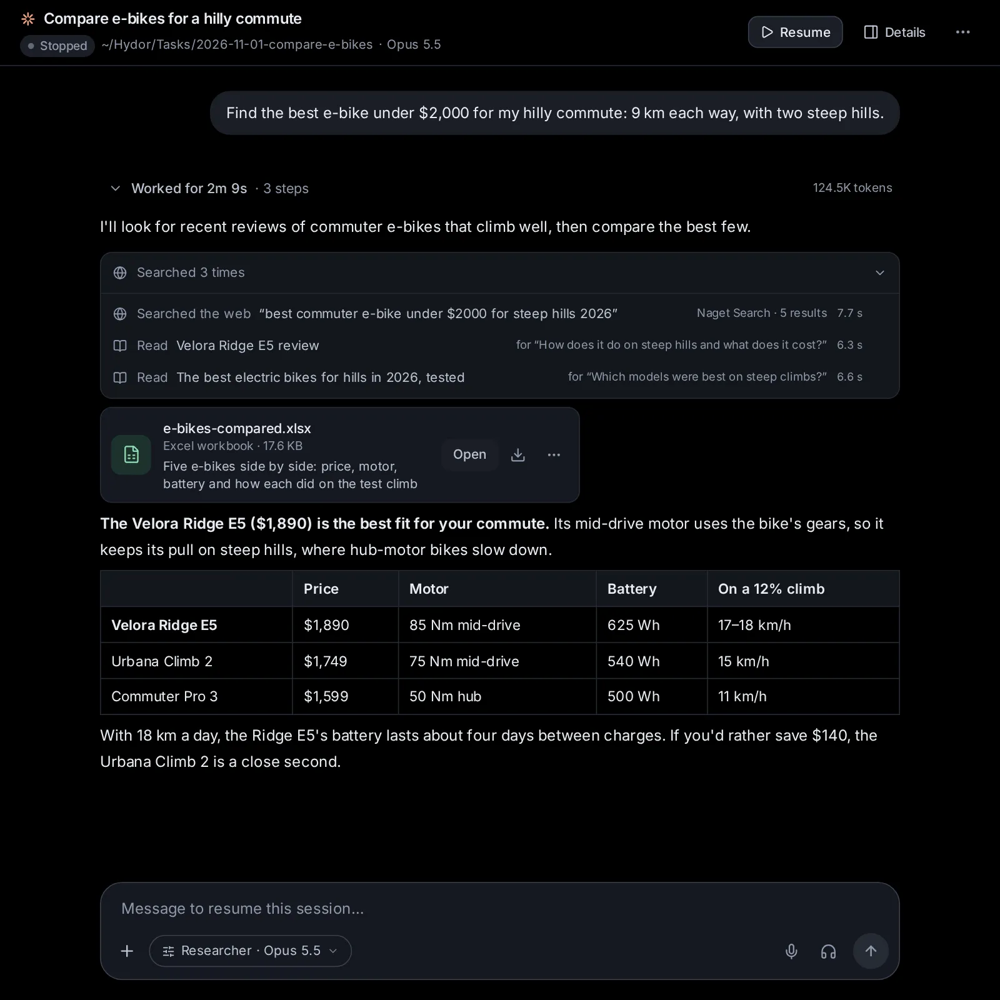
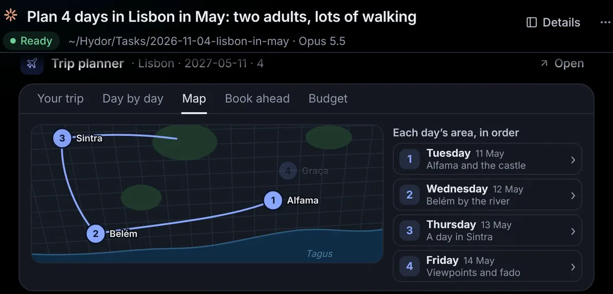
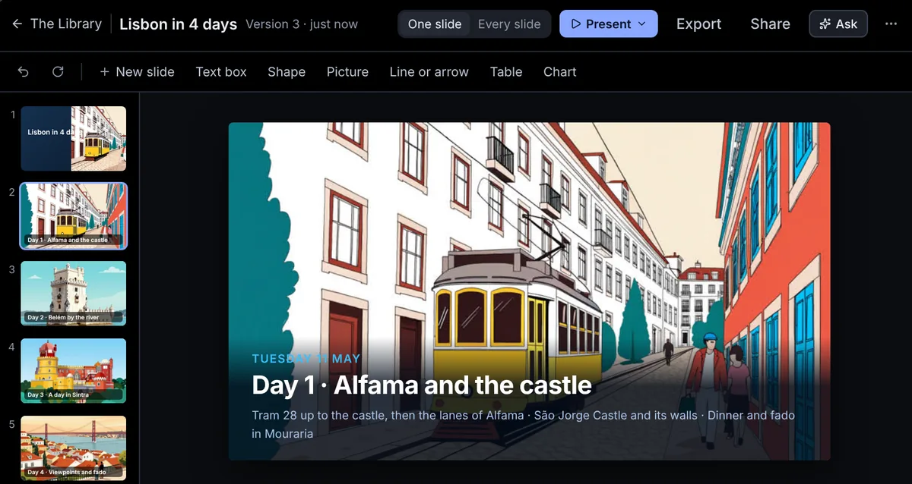
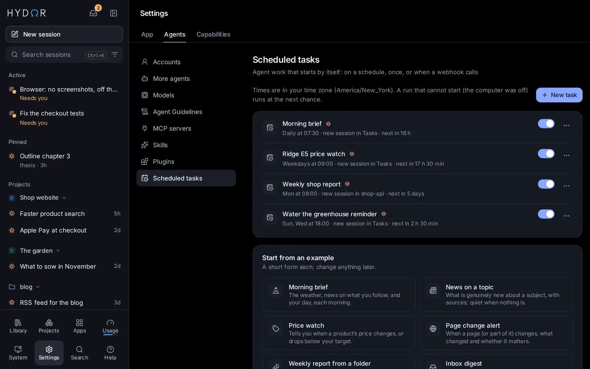

Every agent you use
Claude Code and Codex with the plans you pay for, Gemini CLI and other ACP agents, or Hydor's own agent with any model from OpenRouter, Ollama or vLLM.
ὕδωρ, “water” in ancient Greek: it takes the shape of whatever holds it
Hydor runs Claude Code, Codex or any model on your own computer, with the plans and APIs you already pay for: one memory for all of them, and every session on your phone.
Free and open source · macOS 12 or newer, Apple silicon · Intel Mac · Windows and Linux

Works with the agents and models you already use
Why Hydor
Claude Code and Codex with the plans you pay for, Gemini CLI and other ACP agents, or Hydor's own agent with any model from OpenRouter, Ollama or vLLM.
A profile of you and notes on your projects that every agent starts with, found by meaning and kept on your own computer.
Every step in plain words, approvals as cards, replies with maths, diagrams and charts, and the same app on your phone.
See it work
Every step shows as it happens. Commands and edits wait for your OK, and every change comes with its diff.
An example, played out. In Hydor it is your own agent, working in your own folder.
Features
Each step shows in plain words as it happens. Commands and edits wait for your Allow, every change comes with its diff, and you can add a note while the agent works.

Tell one agent something once and every agent knows it. Hydor keeps a profile of you and notes on your projects, and each session starts with what bears on your request, found by its words and by its meaning.
Start as a Researcher, Writer, Tutor, Planner or Analyst. Agents search and read the web, cite their sources, hand you spreadsheets and documents, and use a browser you can watch and take over.

For the jobs you do again and again: a trip plan, a product comparison, the weather, a quiz. An app asks a few questions and opens its answer in a view of its own, with maps, charts and pictures.

Pages, slides, documents, spreadsheets and LaTeX, edited right in the app. Pictures, videos, music and voice-overs too, all waiting in your Library, by project.

Turn a request into a scheduled task, watch a page or a price, or give an agent a goal it keeps working on until it holds. A notification tells you what it found.

On your phone
Sessions keep running when you close the tab. Add Hydor to your phone's home screen, and get a notification when an agent finishes or needs you.
And everything around them
Yours
Hydor is not a service you sign up for. It is an app that runs where you choose, with the AI you choose.
On your Mac or PC, a Linux box at home or a server you rent. Your sessions, files and memory stay there.
The Claude and ChatGPT plans you have, API keys, OpenRouter, or free models on your own computer.
Passwords and keys live in an encrypted vault. Agents use them by name, only on the sites you allow.
Open source under the Apache 2.0 license: read every line and change what you like, keeping its credit. In English, Chinese or Greek.
Questions
Something else? Ask on GitHub.
Yes. Hydor is free and open source, under the Apache 2.0 license: build on it as you like, keeping its credit. The AI it uses is your own: a Claude or ChatGPT plan you already pay for, API keys, models you pay for as you go through OpenRouter, or free models that run on your own computer.
No. A short tour, made for people new to AI, sets up what you want to use. Then ask in plain words: agents help with research, writing, planning, learning and everyday jobs. If you do code, you also get a terminal, files, Git and every change as a diff.
On the computer that runs Hydor. Your sessions, files, memory and keys are kept there, not in a Hydor cloud. Agents reach the AI services and websites you choose from there.
No. Hydor has no telemetry, analytics or crash reports, no account with us and no install ID. Your conversations go only to the model you chose. The few other connections it makes (update checks, price and model lists, one-time downloads, and the searches your agents ask for) are listed host by host, with how to turn each off, in What leaves your computer.
Yes. Open it in your phone's browser and add it to the home screen: it works like an app, with notifications. To reach it away from home, put HTTPS in front of it; the docs show a few easy ways.
Claude Code, Codex, Gemini CLI and other agents that speak the Agent Client Protocol, such as OpenCode, Qwen Code, Goose, Kimi CLI and Auggie. Hydor's own agent, Custom, gives any model the same tools: through OpenRouter, Ollama, or vLLM on your own graphics card.
Yes. The Windows app installs for your account and keeps itself up to date, like the apps for Mac and Linux. Agents run their commands in Git for Windows, as Claude Code does there, so install that too. Docker works as well.
Hydor runs the official Claude Code and Codex on your own plans, and gives every agent one memory, a phone app with approvals, and a Library. What your other agents know, and the skills you made in them, come over, and you pick what to keep. See the comparisons, with their sources.
No. Hydor is an independent project, not affiliated with or endorsed by Anthropic or OpenAI. It runs their official command-line tools, signed in with your own account.
Download
Install it once on a computer, then open it from any device.
A short tour sets up the rest.
Everything Hydor needs in one app, in its own window and in the menu bar. It keeps itself up to date.
macOS 12 or newer. Not sure which? Apple menu → About This Mac: “Apple M…” means Apple silicon.
An installer for your account, no administrator needed: Hydor in the Start menu and in its own window. It keeps itself up to date.
Windows 10 or 11, x64. The installer is not signed yet: if Windows asks, choose More info, then Run anyway.
For Ubuntu and Debian (.deb) or any other system (AppImage), with its own Node.js and tmux, in the system tray. It keeps itself up to date.
x64. For ARM: .deb · AppImage. A system from 2022 or later: Ubuntu 22.04, Debian 12, Fedora 36.
Or on a server
On a server, or anywhere Docker runs: Intel/AMD and ARM. Then open the setup link from its log.
docker run -d --name hydor --restart unless-stopped \
-p 127.0.0.1:8790:8790 -v hydor-home:/home/node \
-v "$PWD/workspace:/workspace" algoprog/hydor
docker logs hydor | grep setupAs a service of your user, on a machine without a screen. Needs Node.js 22.12 or newer, git and tmux.
git clone https://github.com/algoprog/hydor && cd hydor
./install.shRun it on a cloud service from the Docker image, billed to your account there.
Latest release: Hydor %VERSION% · Release notes · Install guide